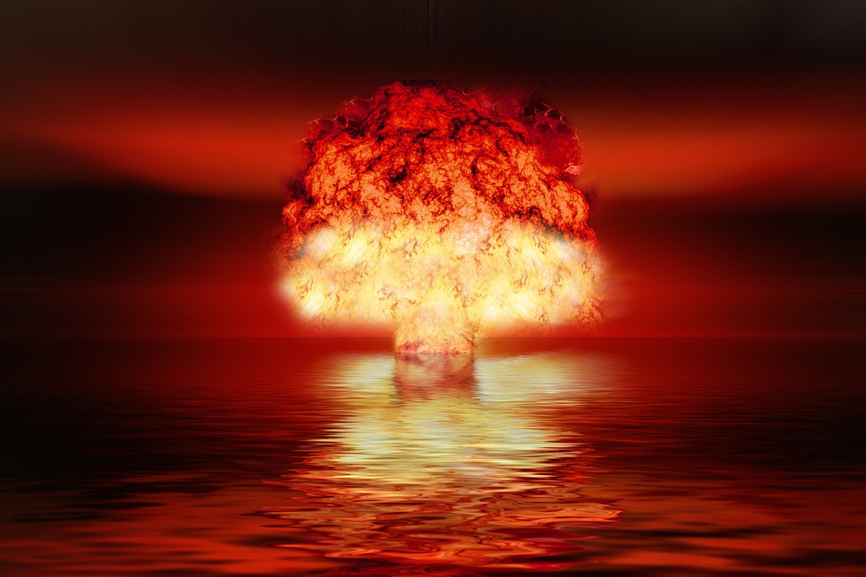

This is the beginning of the end

Description
This pages is specially dedicated to the concept of a recipe for disaster. In short, it is an accumulation of human behaviors that tend towards chaos, mismanagement of oneself, and
ultimate destruction of the spirit.
Ingredients
- Poor attitude
- General lack for hygiene
- Lack of interest in communication with others
- Abuse of mind alterring substances
Recipe
- Start with a notion that you are impervious to destruction and that no-one understands the struggles that you face
- Sprinkle in th mind alterring substances and stir until the initial notions are blurred together in a creamy sauce